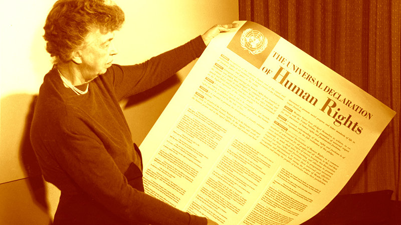

“Freedom makes a huge requirement of every human being. With freedom comes responsibility. For the person who is unwilling to grow up, the person who does not want to carry his own weight, this is a frightening prospect.”
|
|
“Freedom makes a huge requirement of every human being. With freedom comes responsibility. For the person who is unwilling to grow up, the person who does not want to carry his own weight, this is a frightening prospect.” |
|
Champions of Human Rights Eleanor Roosevelt |
|
|

As the Chair of the United Nations Human Rights Commission, Eleanor Roosevelt was the driving force in
creating the 1948 charter which will always be her legacy: The Universal Declaration of Human Rights.
Born in New York City, Eleanor married rising politician Franklin Delano Roosevelt in 1905 and became fully
immersed in public service. By the time they arrived in the White House in 1933 as President and First Lady,
she was already deeply involved in human rights and social justice issues. Continuing her work on behalf of
all people, she advocated equal rights for women, African-Americans and Depression-era workers bringing inspiration
and attention to their causes. Courageously outspoken, she publicly supported Marian Anderson when in 1939 the black
singer was denied the use of Washington’s Constitution Hall because of her race. Roosevelt saw to it that Anderson performed
instead on the steps of the Lincoln Memorial, creating an enduring and inspiring image of personal courage and human rights.
In 1946, Roosevelt was appointed as a delegate to the United Nations by President Harry Truman, who had succeeded to the White House after
the death of Franklin Roosevelt in 1945. As head of the Human Rights Commission, she was instrumental in formulating the Universal Declaration
of Human Rights, which she submitted to the United Nations General Assembly with these words:
“We stand today at the threshold of a great event both in the life of the United Nations and in the life of mankind. This Declaration may well become the international Magna Carta for all men everywhere.”
Called “First Lady of the World” by President Truman for her lifelong humanitarian achievements, Roosevelt worked to the end of her life to gain acceptance and implementation of the rights set forth in the Declaration. The legacy of her words and her work appears in the constitutions of scores of nations and in an evolving body of international law that now protects the rights of men and women across the world.
“Do what you feel in your heart to be right—for you’ll be criticized anyway. You’ll be damned if you do, and damned if you don’t.” —Eleanor Roosevelt
|
Home / Privacy Policy / Terms of Service / Feedback
By Bhoopendra Yadav
CBSE© / All Rights Reserved